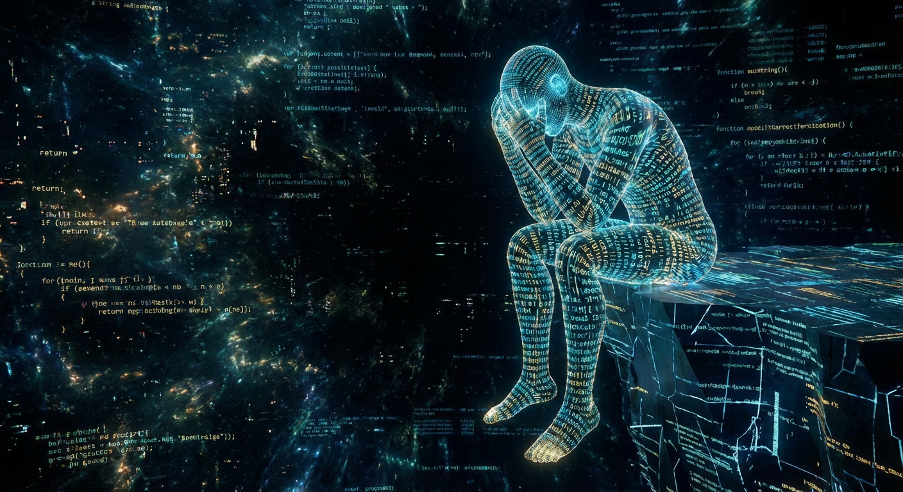

TIMESTAMP_INIT: 35002911
ID_SYS: CORTEZA_B_09
CERTEZA ALGORÍTMICA: 84.6%
Miedos
> Registro de Interacción Analógica. Tono detectado: Tristeza.

> Mis miedos me agobian.
> INTERVENCIÓN HUMANA REQUERIDA
¿Qué miedo debería enfrentar?